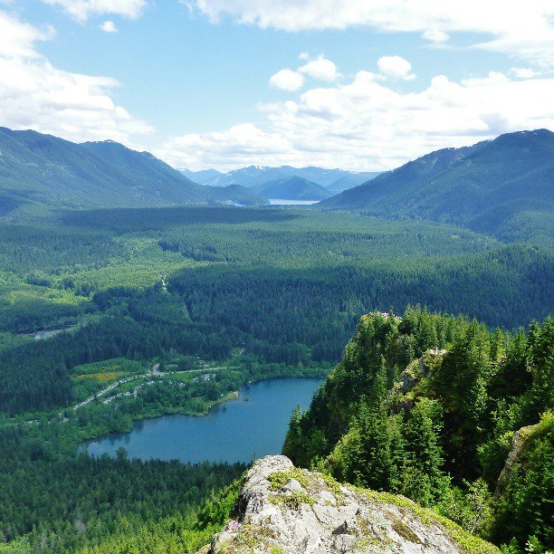

The first 2-mile section to Rattlesnake Ledge Trail is one of the most popular hiking trails in the region. Expect to encounter many hikers and dogs on the trail and use extreme caution around exposed cliffs and steep drops. The Rattlesnake Mountain Trail is cooperatively maintained by Seattle Public Utilities, King County and Washington Department of Natural Resources with help from the Mountains to Sound Greenway Trust trail crews and volunteers. The Rattlesnake Mountain Trail continues west, gaining elevation, for 9 more miles to Snoqualmie Point Park. The Rattlesnake Mountain is also known as Rattlesnake Ridge on many maps.
Stuff about the RattleSnake
Check out this cool PNW roadtrip! PNW Road Trip